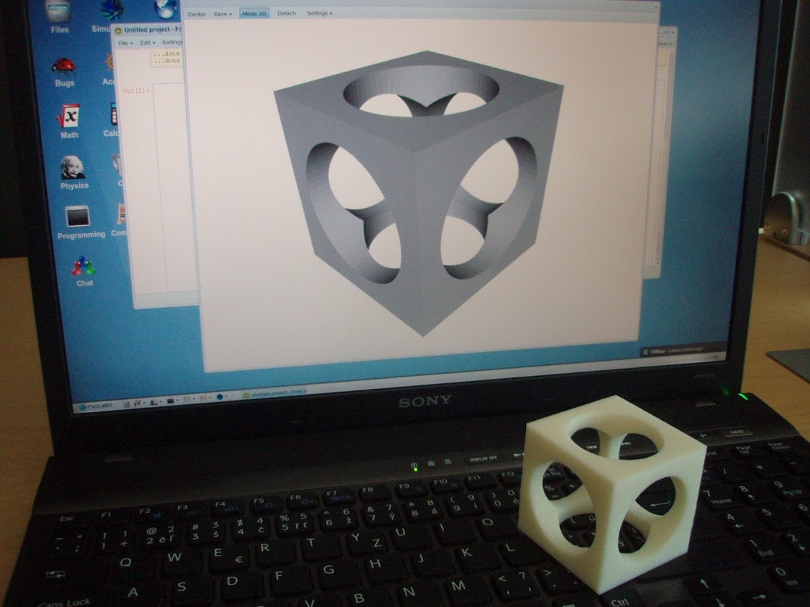

3D CAD Design Textbook
"Solid Modeling with PLaSM"
Author: Pavel Solin et al.Publisher: FEMhub Inc.
Download:
- Textbook with Design Projects (PDF, 5 MB)
- Solution Manual (PDF, 1.5MB) available in NCLab
PLaSM, 3D Printing, and WebGL
NCLab provides 3D solid modeling with PLaSM (Programming Language for Solid Modeling). PLaSM is a simple and elegant scripting language that makes it possible to create and transform objects via simple commands, as well as perform advanced Boolean operations and design curved surfaces. NCLab has STL output, so you can use it to prepare data for 3D printers, and materialize your 3D CAD designs. In order to use advanced 3D graphics in NCLab, you need to enable WebGL in your web browser as described here.For Contributors
The textbook is open to contributors. If you like to contribute with a bugfix, example, section or chapter - you are very welcome. Every contributor automatically becomes a co-author. If you like to contribute, please contact Pavel Solin with a brief description of your idea. You should be able to use Latex and Git (Github). The following workflow is generally followed:- Create a free account at Github if you do not have one already.
- Fork the public repository "femhub/nclab-textbook-plasm" into your account.
- Clone your fork into your own computer or laptop.
- Create a branch for your edits, do your edits, commit them, push them into your Github repository, and generate a pull request.
- You will hear from us!
Other Free NCLab Textbooks
